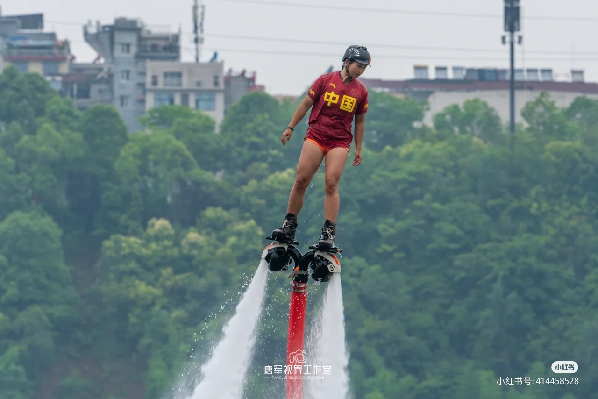

“平安顺利 幸福安康”—第22届安康汉江龙舟节将于6月3日开幕
“汉水即安康的母亲河，孕育出璀璨辉煌的汉水文化”，龙舟竞渡便是陕西省安康地区极具特色的城市名片。近日，备受各界关注的第22届安康汉江龙舟节将于6月3日在安康龙舟文化园盛大开幕。

据介绍，本届安康汉江龙舟节活动将开展传统端午祭祀仪式、文艺演出和水上技巧表演拉开龙舟节活动序幕。相较于往届举办的安康汉江龙舟节活动，文化继承和创新并重是本届龙舟节活动的重中之重，本届龙舟节活动则更加突出安康地域文化和时代特点，做亮安康龙舟节品牌。分别安排了白天和夜间演出活动，白天的活动通过70分钟的仪式和文艺节目等环节将安康人民对美好生活的向往、对安康情怀的眷恋等情感展示出来，气势宏大、振奋人心。以“一江两岸”优美夜景为背景，以声光电现代科技手段和精品节目为依托的龙舟节夜间演出分别在6月3日、4日举行

夜间演出也是本届龙舟节活动的特色之一。通过民歌、民舞等艺术形式配合绚丽的舞台灯光展示出来，亮点纷呈，将进一步丰富龙舟节主题活动的内涵和外延。 此外，活动精心设计编排了许多精美绝伦的节目。其中，安康汉调二黄研究院于本届龙舟节开幕式当天带来汉剧原创节目表演《大美安康》以及同日夜间节目《樵木花》最具看点。据介绍，“汉调二黄（俗称汉剧）”于2006年被列入第一批国家级非物质文化遗产名录，是安康最具辨识度的文化名片。

同时，龙舟节活动也是安康向外界展示城市形象和文化的重要窗口。下一步，安康汉江龙舟节将开展助推高质量发展、产业促进活动和旅游推介活动等多方面活动。安康市将通过开展“金融活水润安康”主题活动、常态化开展“一季度一主题”政银企精准对接活动。邀请有合作意向的重点企业、委托招商机构等单位，进行重点产业链项目合作进行交流恳谈，推介产业链重点招商项目。龙舟节活动是实现安康市社会效益与经济效益双丰收，促进安康经济社会高质量发展的重要机会。